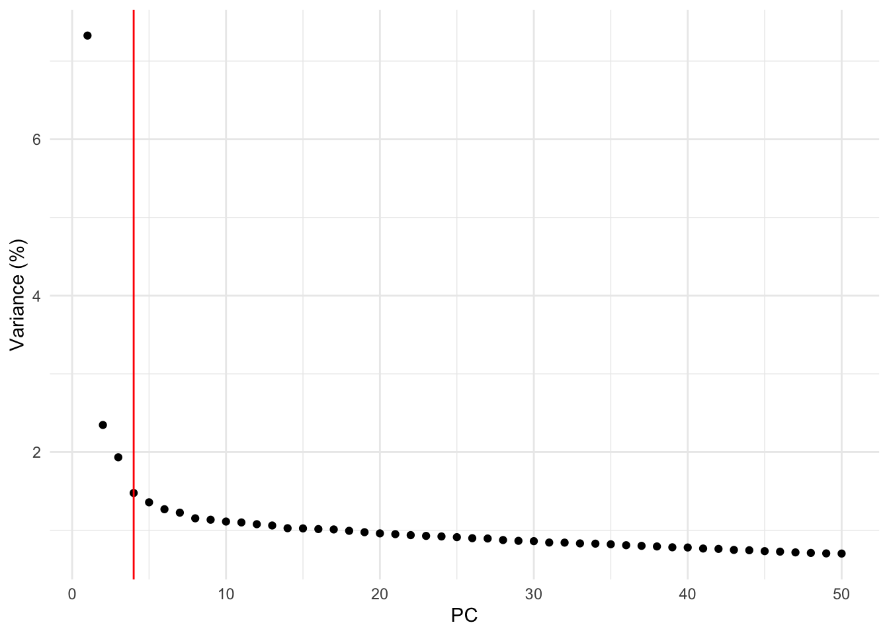
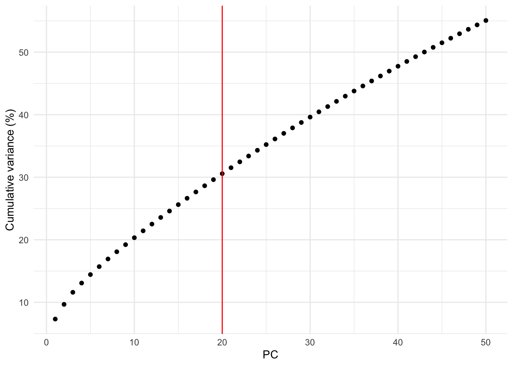
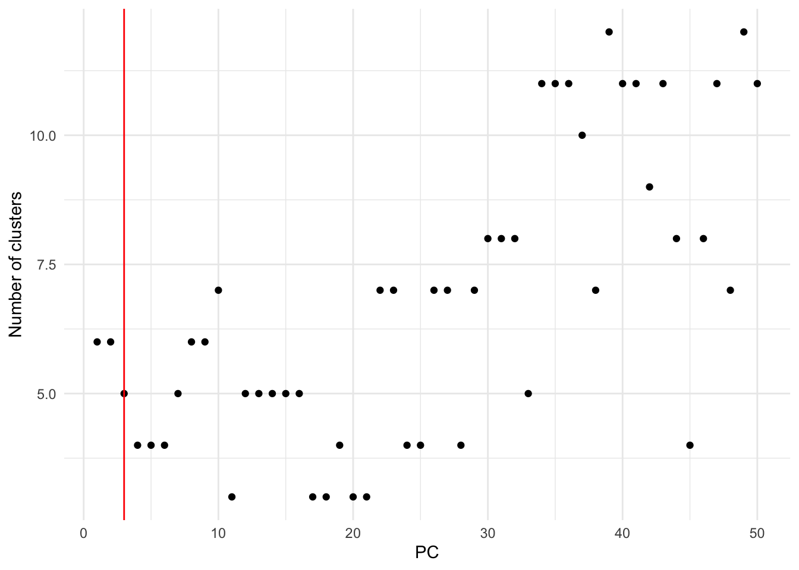

Last updated: 2019-09-11
Checks: 6 1
Knit directory: heart/
This reproducible R Markdown analysis was created with workflowr (version 1.4.0). The Checks tab describes the reproducibility checks that were applied when the results were created. The Past versions tab lists the development history.
The R Markdown is untracked by Git. To know which version of the R Markdown file created these results, you’ll want to first commit it to the Git repo. If you’re still working on the analysis, you can ignore this warning. When you’re finished, you can run wflow_publish to commit the R Markdown file and build the HTML.
Great job! The global environment was empty. Objects defined in the global environment can affect the analysis in your R Markdown file in unknown ways. For reproduciblity it’s best to always run the code in an empty environment.
The command set.seed(1701) was run prior to running the code in the R Markdown file. Setting a seed ensures that any results that rely on randomness, e.g. subsampling or permutations, are reproducible.
Great job! Recording the operating system, R version, and package versions is critical for reproducibility.
Nice! There were no cached chunks for this analysis, so you can be confident that you successfully produced the results during this run.
Great job! Using relative paths to the files within your workflowr project makes it easier to run your code on other machines.
Great! You are using Git for version control. Tracking code development and connecting the code version to the results is critical for reproducibility. The version displayed above was the version of the Git repository at the time these results were generated.
Note that you need to be careful to ensure that all relevant files for the analysis have been committed to Git prior to generating the results (you can use wflow_publish or wflow_git_commit). workflowr only checks the R Markdown file, but you know if there are other scripts or data files that it depends on. Below is the status of the Git repository when the results were generated:
Ignored files:
Ignored: .DS_Store
Ignored: .Rhistory
Ignored: .Rproj.user/
Ignored: analysis/.DS_Store
Ignored: data/.DS_Store
Ignored: data/interim/
Ignored: data/processed/
Ignored: data/raw/
Ignored: docs/.DS_Store
Untracked files:
Untracked: CITATION
Untracked: LICENSE
Untracked: analysis/annotation.Rmd
Untracked: analysis/atlas.Rmd
Untracked: analysis/cache/
Untracked: analysis/clustering.Rmd
Untracked: analysis/dimension.Rmd
Untracked: analysis/feature.Rmd
Untracked: analysis/feature.md
Untracked: analysis/import.Rmd
Untracked: analysis/integration.Rmd
Untracked: analysis/interactive.Rmd
Untracked: analysis/markers.Rmd
Untracked: analysis/normalization.Rmd
Untracked: analysis/quality.Rmd
Untracked: analysis/trajectory.Rmd
Untracked: code/elbow.R
Untracked: code/plot.R
Untracked: code/script.R
Untracked: code/theme.R
Untracked: data/annotation.Rds
Untracked: data/clustering.Rds
Untracked: data/dimension.Rds
Untracked: data/external/
Untracked: data/feature.Rds
Untracked: data/import.Rds
Untracked: data/integration.Rds
Untracked: data/markers.Rds
Untracked: data/normalization.Rds
Untracked: data/quality.Rds
Untracked: data/trajectory.Rds
Untracked: docs/Srivastava_Nature_572_120–124_2019.pdf
Untracked: docs/figure/
Untracked: docs/markers.csv
Untracked: shiny/
Unstaged changes:
Modified: _workflowr.yml
Modified: analysis/_site.yml
Modified: analysis/index.Rmd
Modified: heart.Rproj
Note that any generated files, e.g. HTML, png, CSS, etc., are not included in this status report because it is ok for generated content to have uncommitted changes.
There are no past versions. Publish this analysis with wflow_publish() to start tracking its development.
In this document we aim to reduce the number of separate dimensions in the data by performing dimenstionality reduction.
Set chunk options:
knitr::opts_chunk$set(
autodep = TRUE,
cache = TRUE,
cache.path = "cache/dimension",
dev = "png",
error = FALSE,
message = FALSE,
warning = FALSE
)Load required packages:
pacman::p_load(
here,
patchwork,
readr,
scater,
scran
)Read experiment data:
sce <- readr::read_rds(here::here("data/integration.Rds"))Perform a principal components analysis (PCA) on the expression data:
set.seed(1701)
sel <- rowData(sce)$selected
sce <- runPCA(sce, subset_row = sel)Find the elbow point in the percentage of variance explained by successive PCs:
dim <- reducedDim(sce, 'PCA')
var <- attr(dim, 'percentVar')
num <- PCAtools::findElbowPoint(var)Plot the percentage of variance explained by successive PCs:
dat <- data.frame(index = seq_along(var), total = var)
ggplot(dat, aes(index, total)) +
geom_point() +
geom_vline(xintercept = num, colour = 'red') +
labs(x = 'PC', y = 'Variance (%)') +
theme_minimal()
Retain all PCs until the percentage of total variation explained reaches a given threshold based on the technical noise:
set.seed(1701)
var <- attr(dim, 'percentVar')
mod <- modelGeneVarWithSpikes(sce, 'ERCC')
sel <- rowData(sce)$selected
dim <- getDenoisedPCs(sce, technical = mod, subset.row = sel)
num <- ncol(dim$components)Plot the cumulative percentage of variance explained by successive PCs:
dat <- data.frame(index = seq_along(var), total = cumsum(var))
ggplot(dat, aes(index, total)) +
geom_point() +
geom_vline(xintercept = num, colour = 'red') +
labs(x = 'PC', y = 'Cumulative variance (%)') +
theme_minimal()
Find the number of subpopulations in the data using clustering:
dim <- reducedDim(sce, 'PCA')
len <- seq_len(ncol(dim))
res <- sapply(len, function(x) {
mat <- dim[, seq_len(x), drop = FALSE]
snn <- buildSNNGraph(mat, transposed = TRUE)
cls <- igraph::cluster_walktrap(snn)$membership
val <- length(unique(cls))
})
num <- len[which.min(abs(res - 1 - len))]Plot the percentage of variance explained by successive PCs:
dat <- data.frame(index = len, total = res)
ggplot(dat, aes(index, total)) +
geom_point() +
geom_vline(xintercept = num, colour = 'red') +
labs(x = 'PC', y = 'Number of clusters') +
theme_minimal()
Choose number of PCs to retain from the above analyses:
num <- 4
len <- seq_len(num)
dim <- reducedDim(sce, 'PCA')
reducedDim(sce, 'PCA') <- dim[, len]Plot retained PCs:
#Hello!
plotPCA(sce, colour_by = "genotype", ncomponents = num)